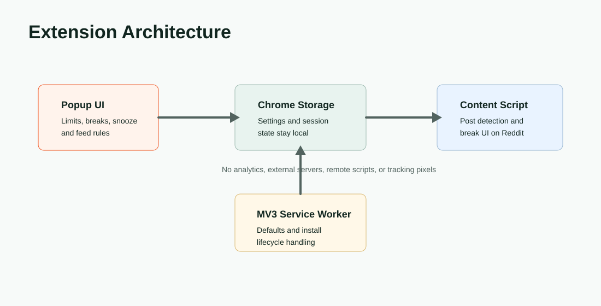
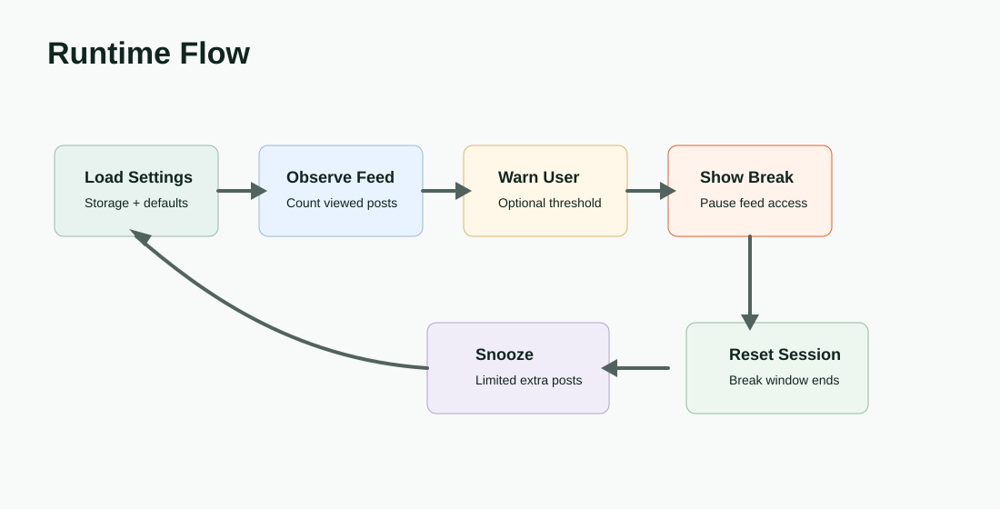

Problem
Reddit's feeds are built for continuous scrolling, so a user who wants a boundary has to rely on willpower or a blunt site blocker. The useful version of this tool needed to be lighter: let Reddit work normally, count the current session, warn before the limit, and create a pause that can be adjusted instead of feeling punitive.
Solution
Reddit Scroll Limiter injects a content script into modern Reddit, old Reddit, new Reddit, and sh.reddit.com. It watches feed posts in the page, tracks viewed-post and optional time limits, and shows a break UI when the session reaches the configured boundary. The popup exposes the controls a user needs day to day: post limit, break length, reset window, snooze amount, warning threshold, feed allowlist/blocklist rules, and temporary disable options.
Each post counts once. The script identifies a post by the ID in its comments permalink, or by a stable element ID where there is no link, and counts it when at least half of it is on screen (IntersectionObserver). A MutationObserver picks up new posts as Reddit loads more of the feed. Session state follows the route, so the home feed, Popular, each subreddit and search are tracked separately, and opening a post's comments never counts toward the limit.
Architecture

Runtime Flow

Design Decisions
Local-First Privacy
Settings and session state use Chrome storage. The extension does not collect analytics, transmit browsing data, use remote scripts, or send Reddit content to a server.
Feed-Aware Rules
Users can apply limits to every Reddit feed, only specific feeds, or every feed except listed ones, which keeps the tool useful without blocking legitimate research or focused browsing.
Snooze Without Defeat
A short snooze gives users a controlled extension, while per-session snooze limits stop that escape hatch from turning into another infinite scroll.
Modern And Old Reddit
The content script supports current Reddit surfaces and old Reddit, using an in-feed break card where possible with an overlay fallback where needed.
Release And Validation
The repository includes build and validation scripts for the Chrome Web Store package, static syntax checks, UI smoke tests, runtime smoke tests, release readiness checks, and live Reddit testing notes. The static checks were recorded as passing on June 8, 2026. Version 1.0.1 is published on the Chrome Web Store, last updated June 8, 2026, with a privacy disclosure that it does not collect or use user data.